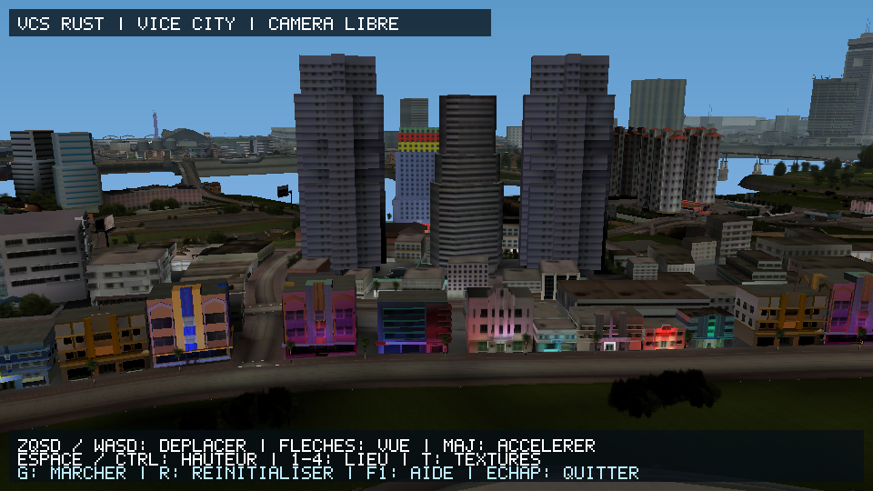
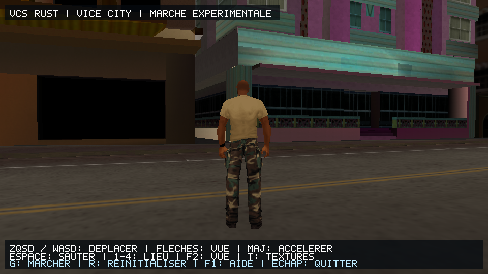
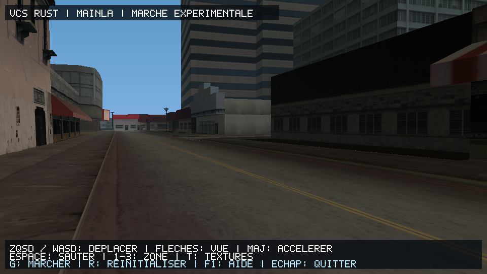
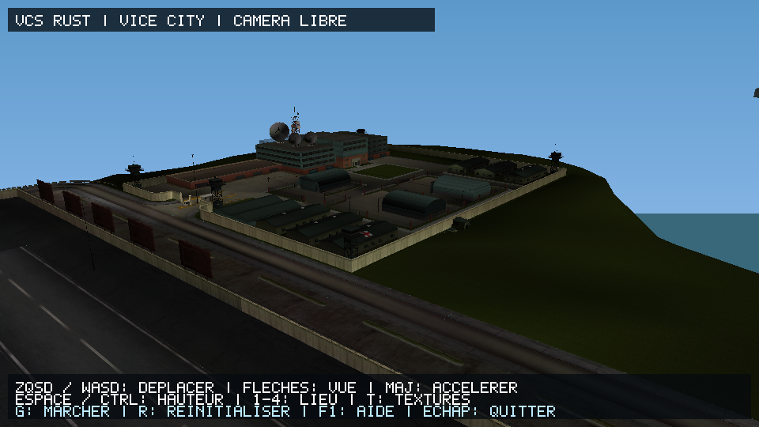

Grand Theft Auto:
Vice City Stories
Portage PC haute performance réécrit en 100% pur Rust, compilé directement en x86_64 natif pour Windows et Linux. Zéro émulateur CPU au runtime, distance d'affichage 5 km débloquée, physique PS2 authentique et fluidité 60+ FPS.
100% Pur Rust Natif
Aucune émulation MIPS ni couche PPSSPP/PCSX2 au runtime. L'ensemble de la boucle de jeu, de la physique et des structures de données est compilé en binaire machine natif ultra-optimisé.
Monde Continu Sans Coupure
Les secteurs Beach, Mainland et Starfish Island sont fusionnés et streamés simultanément avec une distance d'affichage jusqu'à 5 km sans temps de chargement ni pop-in.
Physique & Suspensions 4 Roues
Handling authentique issu des données binaires de Vice City Stories (masse 1400 kg, braquage 34°). Amortissement indépendant des 4 roues calculé et animé en temps réel sur le relief 3D.
Arsenal & Balistique 3D
Système complet d'armes à feu et de projectiles paraboliques (g = 9.81 m/s²). Tracés de balles lumineux, roquettes RPG avec traînées de fumée et lunette de sniper avec réticule haute précision.
Circulation & Feux Tricolores
Réseau routier Leeds fonctionnel avec feux de signalisation vert/orange/rouge aux carrefours majeurs, ralentissement et arrêt des PNJ, et réaction d'écartement aux gyrophares de police.
Piétons & Réactions de Panique
Génération autonome de PNJ sur les trottoirs, évitement dynamique des obstacles statiques et des véhicules, et mouvements de panique (fuite/accroupissement) en cas de fusillade.
Captures du Moteur Temps Réel
Rendu OpenGL accéléré matériellement extrait directement du binaire VCS-Rust.exe




Couverture Analytique de la Codebase
Cartographie Treemap squarifiée proportionnelle aux routines portées en pur Rust